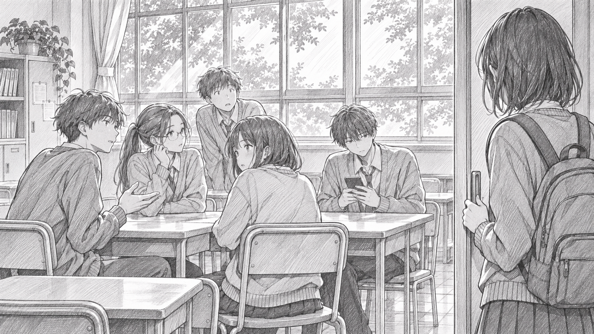

STORY 01지우 시점교실 문 앞
정서적 부담20
도움 연결도0

헤어진 다음 날 · 교육용 이야기
같은 사건, 세 사람의 시선
피해자 지우의 이야기에서 시작해 방관자 민서, 가해자 태오의 순서로 플레이합니다.
세 시점을 모두 지나며 각자의 자리에서 할 수 있는 행동을 생각해보세요.
‹친구들
메시지 입력…↑
스페이스바 또는 오른쪽 방향키
SCENE TRANSITION
버튼을 누르거나 스페이스바로 계속
나레이션01 / 09
스페이스바 또는 오른쪽 방향키
STORY 01 · STORY 02 · STORY 03
이야기 밖에서, 내가 할 수 있는 일
세 사람의 시점에서 본 일을 떠올리며, 현실에서 실천할 행동을 적어보세요.
작성한 내용은 이 기기의 브라우저에 저장되며 외부로 전송되지 않습니다.